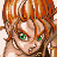
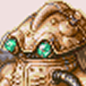

| Personajes |
| Crono: Este es el personaje principal de la historia, el es un espadachin que sin saberlo, se ve envuelto en una serie de sucesos que lo llevan a salvar su mundo de la destruccción. Crono es el personaje sin "lengua", ya que en ningun momento de la historia menciona una sola palabra, pero bueno, el no necesita de ellas para ser el personaje principal. Era: 1,000 DC. Tipo de armas: Sables. Mejor arma: Rainbow Sword. |
| Marle: Esta linda niña es en realidad la princesa Nadia del Reino de Guardia, que por azares del destino conoce a Crono y hace que se habra un portal del tiempo por el cual es teletransportada, haciendo a Crono su unico salvador para rescatarla. Era: 1,000 DC. Tipo de armas: Ballestas. Mejor arma: Valkerye. |
 |
|
Lucca: Ella es la mejor amiga de Crono, Lucca es la creadora de la maquina del tiempo que, a principio se suponia que era un teletransportador, pero por culpa de el pendiente que traia Marle, hizo que apreciera un portal del tiempo por el cual inicia toda la aventura. Era: 1,000 DC. Tipo de armas: Pistolas. Mejor arma: WonderShot. |
|
Frog: Este horroroso sapo, que asi lo llamaria Marle, es en realidad un muchacho de nombre Glenn, que gracias a la magia de Magus termina obteniendo esa apariencia. El solo busca vengar la muerte de su maestro Cyrus, quien fue asesinado por Magus antes de que lo conbirtiera en sapo. Era: 600 DC. Tipo de armas: Espadas. Mejor arma: Masamune 2. |
|  |
Robo: Este robot de nombre Prometheus fue programado para eliminar a la raza humana, pero gracias al ingenio de Lucca, este termina siendo un robot bueno con emociones que se une al grupo. Era: 2,300 DC. Tipo de arma: Brazos. Mejor arma: TerraArm es mas confiable, pero CrisisArm causa un daño MUCHO mayor (Cuando el HP es menor de 10). |
|
Ayla: Esta ruda mujer es la lider de la tribu Ioka, quien con ayuda de Crono y sus compañeros, le ayudan a liberarse de los Reptiles de esa epoca. Era: 65'000,000 AC. Tipo de arma: Puños. Mejor arma: Bronze Fist (Lo adquieres al llegar al nivel 96). |
| El personaje secreto del juego. Para no echarles a perder la historia, no les dire quien es realmente. Magus sera uno de tus peores enemigos al principio del juego, pero despues es una gran ayuda. Era: 12'000 AC. Tipo de arma: Hoces. Mejor arma: DoomSickle. |